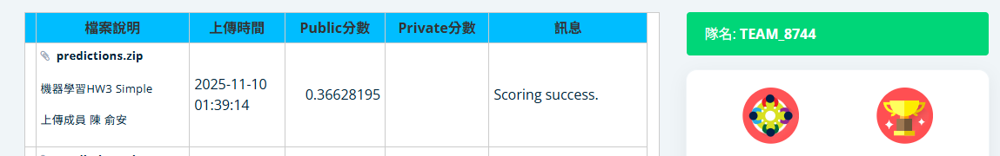
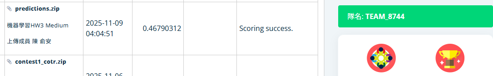

| 總分 | 完成後打勾 | 配分 | 分項描述 |
|---|---|---|---|
| 10 | 4 | Simple baseline - 完成colab baseline的推論並上傳至競賽網頁 | |
| 4 | Medium baseline - 使用HW2 Medium baseline訓練出來的權重檔推論50筆資料並上傳至競賽網頁 | ||
| 2 | Strong baseline - 使用HW2 Strong Baseline訓練出來的權重檔對patient0051做推論 | ||
| -10 | 沒有寫100字心得 |
| Simple & Medium Baseline 圖片   | |||
Strong Baseline - attention unet 圖片
|
|||
Strong Baseline - cotr 圖片
|
|||
Strong Baseline - dyn 圖片
|
|||
Strong Baseline - swin 圖片
|
|||
Strong Baseline - unest 圖片
|
|||
Strong Baseline - unetr 圖片
|